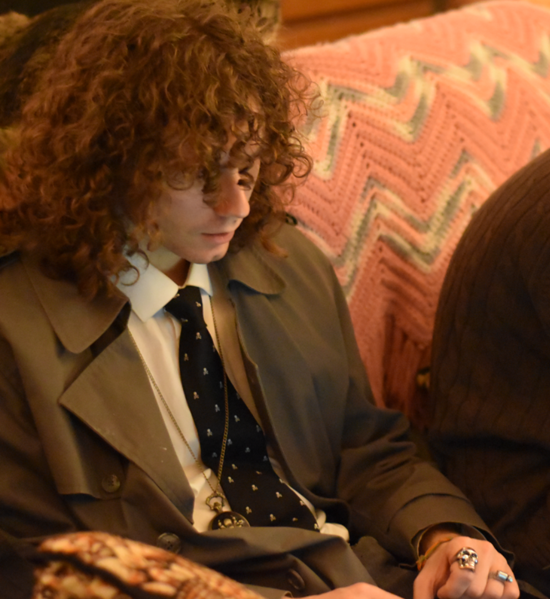

About

Hi! I am John, a current sophomore at George Mason University pursuing a bachelors in Computer Science. With
years of programming experience, I have developed a deep passion for problem-solving, performance optimization, and building innovative solutions from the ground up. My expertise spans many ranges, including Javascript, C, Java, Assembly, Linux, among others. Beyond software development, I also have experience in video editing, graphic design, photography, 3d modeling, using power tools, and more of which I've cultivated through various projects. Whether it's low-level systems programming, graphics rendering, or full-stack development, I'm always up for a challenge.
I have a YouTube channel (which I'm pretty proud of!) where I showcase my tech projects, creative work, and experiments. You can find my social media links below!
Technical Skills
Languages: C, JavaScript, Java, Assembly, TypeScript, Python, C++, HTML, CSS, EBNF
Technologies: Linux, OpenGL, ncurses, Bash scripting, WebSockets, APIs, Regex & Parsing, Node.js, Compilers & Language Processing
Tools: Git, ffmpeg, Blender, Photoshop, Davinci Resolve, Power Tools, Virtual Machines
Beyond Code
Outside of programming, I have experience in robotics, engineering, and hands-on hardware projects. I enjoy blending software and hardware to create innovative solutions and constantly seek new ways to refine my skills and explore emerging technologies.